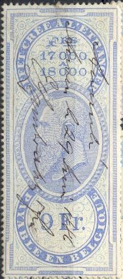
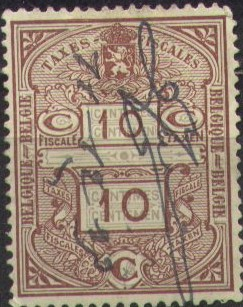
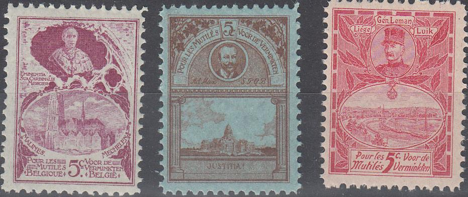

('AFFICHES AANPLAKBRIEVEN', 1886, reduced size)
Note: on my website many of the
pictures can not be seen! They are of course present in the
catalogue;
contact me if you want to purchase it.
Examples:

In the above design were issued the values (1884:
with inscription in French only): 10 c, 25 c, 50 c, 1 F, 1.50 F,
2.50 F, 3 F, 3.50 F, 4 F, 4.50 F, 5 F, 5.50 F, 6 F, 6.50 F, 7 F,
7.50 F, 8 F, 8.50 F, 9 F, 9.50 F, 10 F, 10.50 F, 11 F, 11.50 F,
12 F, 12.50 F, 15 F, 17.50 F, 20 F, 22.50 F, 25 F, 30 F, 35 F, 40
F, 45 F and 50 F (all in the colour blue). Red stamps also seem
to have been issued in the same design.
1891: with inscription in French and Flemish, at least the
following values were issued: 10 c, 25 c, 1 F, 1.50 F, 2.50 F, 3
F, 3.50 F, 4 F, 4.50 F, 5 F, 5.50 F, 6 F, 6.50 F, 7 F, 7.50 F, 8
F, 8.50 F, 9 F, 9.50 F, 10 F, 10.50 F, 11 F, 11.50 F, 12 F, 12.50
F, 15 F, 17.50 F, 20 F, 22.50 F, 25 F, 30 F, 35 F, 40 F, 45 F and
50 F (all in the colour blue). Red stamps also seem to have been
issued in the same design.
('AFFICHES AANPLAKBRIEVEN', 1886, reduced size)
In the above 'AFFICHES' design were issued the values: 5 c, 6 c, 7 c, 8 c, 9 c, 10 c, 11 c and 12 c, all in red, (two shades were of red were issued), both perforated or imperforate. In 1886 the Flemish inscription 'AANPLAKBRIEVEN' was added in the design (same values, all in red colour, only perforated).

In the above 'TAXES FISCALES' design I have seen 10 c brown (grey underprint), 9 F blue (yellow underprint), 100 F olive (blue underprint) and 500 F red (brown underprint). I don't know when this design was issued.

Woman figure with crown next to it on top and lion with star at
bottom. I've seen 0.20 F green and red, and 1 F red and black in
this design.
Man facing the right in a circle on top and lion in circle at the
bottom. I've seen 0.10 F green and 0.20 F green in this design.
Reduced size; The values I've seen are 5 c red (10 F 100 Fr), 10
c red (100 Fr 500 Fr), 20 c red (500 F 1000 F). I've also seen a
similar stamp 10 c blue, but perforated with the text '500 F. ET
AU DESSOUS' and '500 F, EN MINDER'.
Many different kinds of overprints exist. Apparently, these stamps were only valid for a few days.
Example:
(King Leopold II in an oval, 10 c green, reduced size)
War charity labels issued during World War I in the refugee camps in the Netherlands:

Cardinal Mercier, Aldolphe Max and General Leman with city views.


War scenes.


{kind=link}
{kind=link}